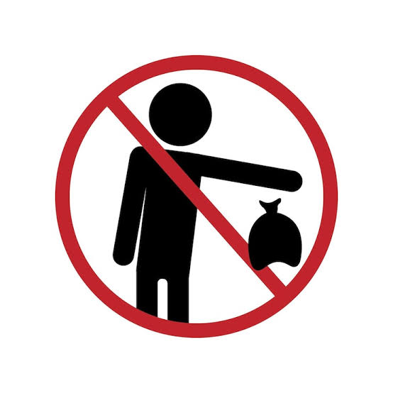
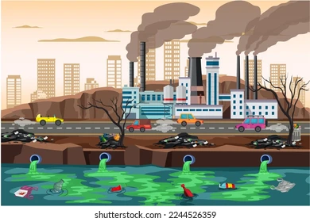
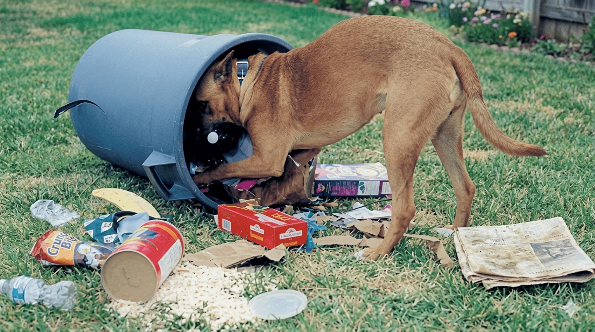

Volver a la página anterior Ir a la Portada Siguiente página: En nuestra escuela
Los desechos se acumulan sin control en calles, terrenos baldíos o vertederos abiertos, donde tardan décadas o siglos en degradarse. Esto genera focos de infección, atrae plagas que transmiten enfermedades, tapa los desagües provocando inundaciones y libera sustancias tóxicas que alteran el equilibrio natural del entorno.

Agua: La lluvia arrastra los desechos hacia ríos y mares, mientras que los líquidos tóxicos que suelta la basura descompuesta (llamados lixiviados) se filtran bajo tierra y contaminan las reservas de agua dulce.
Aire: Cuando los residuos orgánicos se pudren sin ventilación o cuando la basura se quema, se liberan gases contaminantes como el metano y el dióxido de carbono, que ensucian el aire y aceleran el calentamiento global.
Suelo: Las sustancias químicas de pilas, plásticos y metales penetran en la tierra, destruyen los microorganismos que la mantienen fértil e impiden que crezcan plantas o cultivos.

Muchos animales terrestres y marinos confunden los plásticos y otros desechos con comida, lo que les bloquea el estómago y les causa la muerte por envenenamiento. Otros quedan atrapados en bolsas o redes abandonadas, sufriendo heridas graves o asfixia. Además, la acumulación de basura destruye los hábitats naturales y rompe las cadenas alimentarias de los ecosistemas.

"La Tierra no nos pertenece; nosotros pertenecemos a la Tierra y tenemos el deber de protegerla."